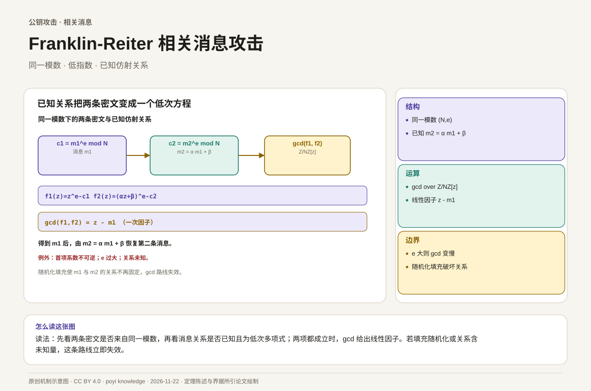
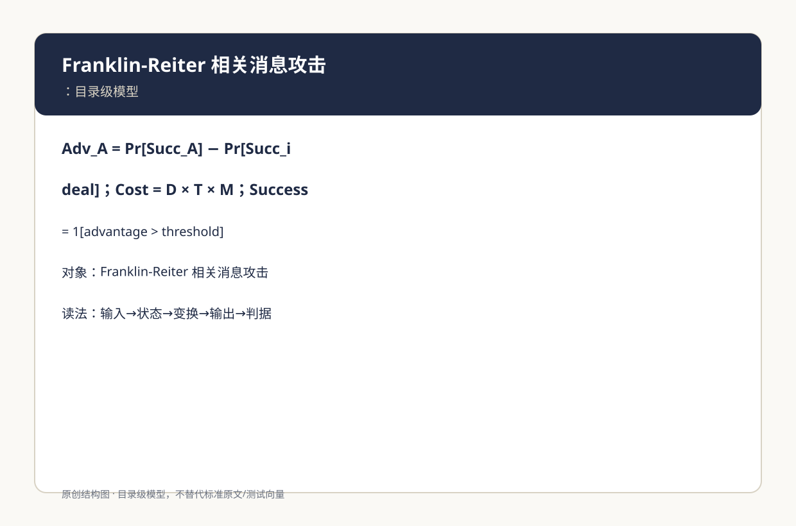

原理与机制
攻击：Franklin-Reiter 相关消息攻击（Franklin-Reiter Related-Message Attack）。### 同模数、低指数、已知关系
设同一 RSA 公钥 (N,e) 下加密了两条消息 m1、m2，且攻击者知道仿射关系 m2 = α m1 + β。记 c1 = m1^e mod N、c2 = m2^e mod N。构造两个一元多项式
f2(z) = (α z + β)^e - c2。它们都把 z = m1 作为模 N 的根。攻击的目标不是分解 N，而是把这个共同的根从两个高次多项式中分离出来。### 多项式 gcd 消去高次项
在环 Z/NZ[z] 上计算 g(z) = gcd(f1, f2)。若首项系数可逆且不落入论文列出的例外情形，g 就是一次多项式 z - m1；求出它的根即恢复 m1，再由仿射关系得到 m2。直观上，gcd 把两个次数为 e 的多项式共有的根分离出来，而不需要知道 N 的因子。### 复杂度与适用指数
朴素欧几里得算法约 O(e^2) 次环运算，快速多项式 gcd 可做到 O(e log^2 e)。因此攻击对 e=3 几乎即时，对 e=65537 也远快于 2^16 级暴力；论文指出在实现得当的情况下，e 的长度到约 32 位仍可能实用。这里的成本随 e 增长，而不是随 N 的因子规模增长。

为什么重要
e=3 或 e=65537 常被选来降低加密与验签成本。低指数本身不是问题；问题是它把“消息之间的关系”放大成可解的低次方程。若协议让两条消息保持已知仿射关系，例如计数器、时间戳、序列号或共享填充，攻击者就能用密文消去未知的高次项。### 与广播攻击的区别
Franklin-Reiter 攻击要求同一个模数 N；Håstad 广播攻击则用不同模数和 CRT。两者都利用低指数，但数学入口不同：前者是同一环上的多项式 gcd，后者是跨模数的 CRT 与整数 e 次根。把它们混成“低指数攻击”会掩盖防御差异。### 对协议设计的含义
只要消息关系可预测，确定性填充并不自动安全。随机化填充、先把消息散列到随机化编码、或使用能破坏代数关系的方案，才会让“已知多项式关系”这一前提失效。判断时应问：攻击者是否知道 m_i 之间的精确代数关系？模数是否相同？e 是否小到可做多项式 gcd？
应用与实例
1.收集同一公钥下的多条密文，确认它们来自同一模数与同一指数。2.找出消息之间的已知关系：仿射、同次多项式，或协议规定的线性约束。3.建立 f_i(z) = (p_i(z))^e - c_i，计算多项式 gcd；若得到一次因子，恢复消息。4.若 gcd 次数较高，改用结式、代数消元或 Coppersmith 型格方法处理。5.记录 e、关系次数 δ 与消息个数 k；这些参数决定攻击是否多项式时间。### 防御审计
审计 RSA 协议时，检查是否存在“同一密钥 + 低指数 + 可预测关系”的组合；检查填充是否随机化；检查是否把消息直接作为多项式变量，而不是先做随机化编码。仅把 e 调大并不总是可行，但在关系无法消除时，它是论文明确讨论的修复方向之一。

边界与攻击面
1.模数不同。Franklin-Reiter 的 gcd 在同一个 Z/NZ 上进行；换成不同模数就进入 Håstad/CRT 的路线。2.关系未知或不确定。若消息关系含未知随机量，攻击者无法写出 f2。3.首项系数不可逆或落入例外情形。论文明确列出 gcd 可能不是线性的罕见情况；实现时必须检查。4.e 太大。多项式次数为 e，gcd 成本随 e 增长；e 很大时攻击不再实用。5.随机化填充有效。若填充使 m1、m2 的关系不再固定，代数前提被破坏。论文也提醒，并非所有填充都足够；需要随机化并经过分析。6.齐次关系。论文指出齐次情形可能只能恢复齐次多项式，不能直接恢复单条消息。
历史与背景
Franklin 与 Reiter 先给出 k=2、e=3、δ=1 的仿射关系特例。1996 年，Coppersmith、Franklin、Patarin 与 Reiter 在 EUROCRYPT 上把它推广：e 可以任意，关系次数 δ 可以大于 1，消息条数 k 也可以更多。论文把这一路线与 Moore、Håstad 及 Simons 的攻击明确区分：那些攻击针对不同公钥，本文针对同一公钥。### 方法的位置
这篇论文把“已知代数关系”变成 RSA 密码分析的一类独立入口。后来的 Coppersmith 小根方法与格归约把同类思想推广到更一般的模方程；在阅读现代 RSA 攻击文献时，Franklin-Reiter 常被当作“同模数、低指数、相关消息”的标准起点。
逐步示例与核验
形式模型与复算步骤
[\mathrm{Adv}^{\mathrm{attack}}_A(\lambda)=\Pr[\mathrm{Game}_A(\lambda)=1]-\frac12]
Franklin-Reiter 相关消息攻击的公开参数、密钥/随机数与消息；变量说明：λ 安全参数；Game 把攻击目标写成挑战-响应游戏。1.定义挑战与获胜条件。2.给攻击者 oracle 访问。3.计算优势并与目标界比较。边界：公式只覆盖已登记的参数与假设；参数取值、标准版本和实现细节仍以来源为准。
参考出处
- Wikipedia search entry for Franklin-Reiter 相关消息攻击. https://zh.wikipedia.org/w/index.php?search=Franklin-Reiter%20%E7%9B%B8%E5%85%B3%E6%B6%88%E6%81%AF%E6%94%BB%E5%87%BB
- Handbook of Applied Cryptography (Menezes, van Oorschot, Vanstone). https://www.cacr.math.uwaterloo.ca/hac/